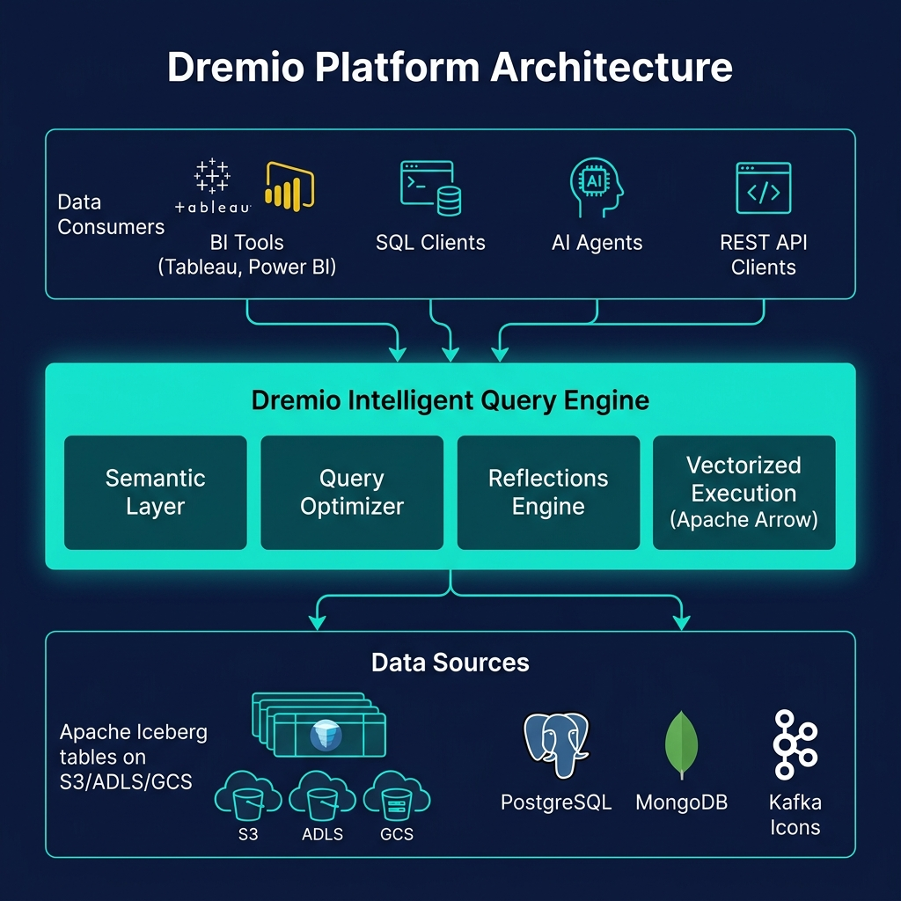
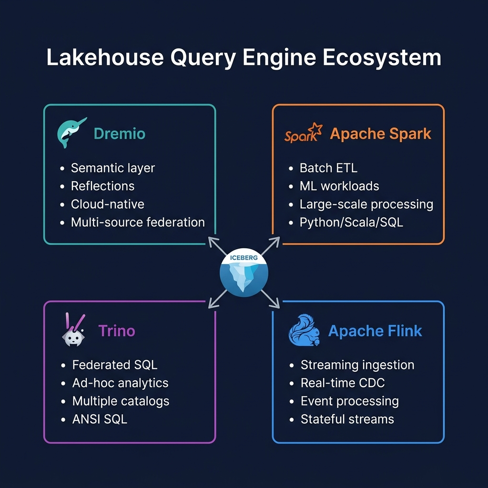

What Are Autonomous Reflections?
Autonomous Reflections is Dremio's AI-driven reflection management system that analyzes historical query patterns and automatically creates, modifies, and drops Reflections to optimize the query acceleration layer for the observed workload — without requiring manual reflection design by a data engineer or DBA.
Traditional Dremio Reflections require someone to understand the query workload, identify high-impact aggregations and scan patterns, and manually configure Reflections to accelerate them. This works well for predictable, stable workloads but breaks down as query patterns evolve — requiring ongoing manual tuning to keep Reflections aligned with actual query patterns.
Autonomous Reflections automates this entire process. Dremio continuously monitors the query workload, identifies new acceleration opportunities, and adjusts the Reflection portfolio dynamically — ensuring that the most impactful queries are always accelerated without requiring human intervention.
How Autonomous Reflections Work
The Autonomous Reflections engine operates in a continuous loop:
- Query monitoring: Dremio logs metadata for every query — the table accessed, columns referenced in SELECT and WHERE, GROUP BY dimensions, aggregation functions, and execution time.
- Pattern analysis: The system identifies frequently repeated query patterns, clustering similar queries by table and access pattern.
- Reflection recommendation: For high-frequency patterns, the engine generates Reflection candidates — specific Raw or Aggregation Reflection configurations that would accelerate those queries.
- Cost-benefit evaluation: Each candidate is evaluated for: expected query speedup, Reflection storage cost, refresh cost (how expensive it is to keep fresh), and estimated query savings based on frequency.
- Reflection creation: High-value candidates are created automatically and refreshed on the configured schedule.
- Retirement: Reflections whose query patterns have shifted and are no longer being used are automatically retired and their storage reclaimed.

Benefits Over Manual Reflections
Autonomous Reflections provide significant operational advantages over manually configured Reflections:
- No expertise required: Data engineers do not need to understand the query workload to optimize it. Autonomous Reflections handle the optimization automatically.
- Always up-to-date: As query patterns evolve (new dashboards launched, old ones retired), Autonomous Reflections adjust the portfolio automatically — no manual tuning sessions needed.
- Cost optimization: By retiring unused Reflections and focusing on high-impact ones, Autonomous Reflections minimize Reflection storage costs while maximizing query acceleration.
- Coverage at scale: Large deployments with hundreds of tables and thousands of daily queries are impossible to manually tune. Autonomous Reflections handle this scale effortlessly.

Summary
Autonomous Reflections represent the next generation of query acceleration for the data lakehouse — moving from manually designed materializations to AI-driven, continuously optimized acceleration that adapts to actual workloads automatically. For Dremio deployments at scale, Autonomous Reflections are the practical path to maintaining peak BI performance without a dedicated performance engineering team.